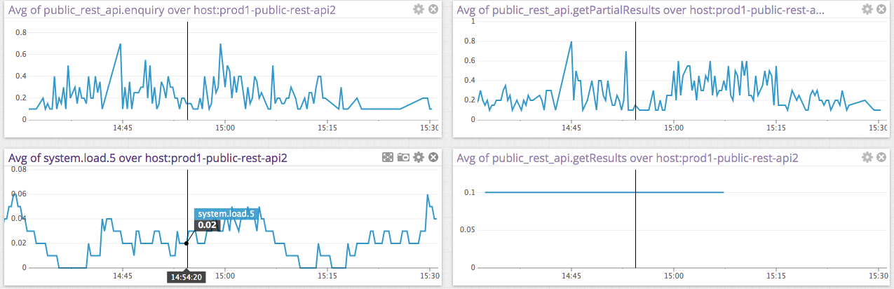

Jan Macháček @honzam399 | Alex Lashford @alexlashford
The users love your system - interactions increase
100's -> 1000's -> 10,000's of users
And you worry.
You are event-driven and therefore more easily scalable. You are using Akka properly, so you just need to tweak some settings to achive the best responsiveness and resilience.
BoundedMailbox, BoundedPriorityMailbox, BoundedControlAwareMailbox)ByteBuffer.allocateDirect(Int.MaxValue)Your code is reactive and tuned, reality brings things that are:
Blocking. Describe symptoms. Show snippet of code.
Show solution & tuning approach for the specific snippet
Generalise
Fails dramatically, failures spread / persist. Describe symptoms. Show snippet of code.
Show solution & tuning approach for the specific snippet
Generalise
Throttle / flow control / circuit breaker. Describe symptoms. Show snippet of code.
Solution for the specific scenario.
Generalise.
Divide your application not only by functional area, but by classifaction of the problem
It is far better for your system to know what its dependencies can cope with, than to deal with the big bang!
Record just enough information. Too much slows down the monitored system, too little lets events go unnoticed.
ThreadPoolsTypesafe Console
- Dev focused montioring
Reactive Monitor
- Lightweight, Configurable, OpenSource<
Kamon.io
- Akka based, statsd / graphite inetgrations
Most statsd tools can show very pretty charts.
Law of Murphy for devops: if thing can able go wrong, is mean is already wrong but you not have Nagios alert of it yet.